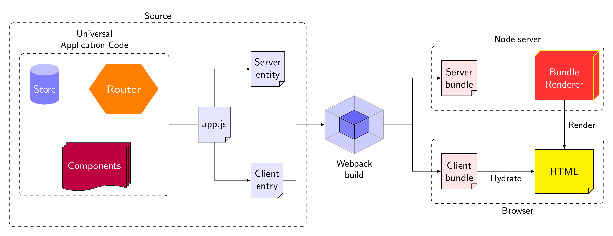

\documentclass[tikz,border=3.14mm]{standalone}
\usetikzlibrary{shapes.geometric,shapes.symbols,fit,positioning,shadows}
% https://tex.stackexchange.com/a/12039/121799
\makeatletter
\pgfkeys{/pgf/.cd,
parallelepiped offset x/.initial=2mm,
parallelepiped offset y/.initial=2mm
}
\pgfdeclareshape{parallelepiped}
{
\inheritsavedanchors[from=rectangle] % this is nearly a rectangle
\inheritanchorborder[from=rectangle]
\inheritanchor[from=rectangle]{north}
\inheritanchor[from=rectangle]{north west}
\inheritanchor[from=rectangle]{north east}
\inheritanchor[from=rectangle]{center}
\inheritanchor[from=rectangle]{west}
\inheritanchor[from=rectangle]{east}
\inheritanchor[from=rectangle]{mid}
\inheritanchor[from=rectangle]{mid west}
\inheritanchor[from=rectangle]{mid east}
\inheritanchor[from=rectangle]{base}
\inheritanchor[from=rectangle]{base west}
\inheritanchor[from=rectangle]{base east}
\inheritanchor[from=rectangle]{south}
\inheritanchor[from=rectangle]{south west}
\inheritanchor[from=rectangle]{south east}
\backgroundpath{
% store lower right in xa/ya and upper right in xb/yb
\southwest \pgf@xa=\pgf@x \pgf@ya=\pgf@y
\northeast \pgf@xb=\pgf@x \pgf@yb=\pgf@y
\pgfmathsetlength\pgfutil@tempdima{\pgfkeysvalueof{/pgf/parallelepiped offset x}}
\pgfmathsetlength\pgfutil@tempdimb{\pgfkeysvalueof{/pgf/parallelepiped offset y}}
\def\ppd@offset{\pgfpoint{\pgfutil@tempdima}{\pgfutil@tempdimb}}
\pgfpathmoveto{\pgfqpoint{\pgf@xa}{\pgf@ya}}
\pgfpathlineto{\pgfqpoint{\pgf@xb}{\pgf@ya}}
\pgfpathlineto{\pgfqpoint{\pgf@xb}{\pgf@yb}}
\pgfpathlineto{\pgfqpoint{\pgf@xa}{\pgf@yb}}
\pgfpathclose
\pgfpathmoveto{\pgfqpoint{\pgf@xb}{\pgf@ya}}
\pgfpathlineto{\pgfpointadd{\pgfpoint{\pgf@xb}{\pgf@ya}}{\ppd@offset}}
\pgfpathlineto{\pgfpointadd{\pgfpoint{\pgf@xb}{\pgf@yb}}{\ppd@offset}}
\pgfpathlineto{\pgfpointadd{\pgfpoint{\pgf@xa}{\pgf@yb}}{\ppd@offset}}
\pgfpathlineto{\pgfqpoint{\pgf@xa}{\pgf@yb}}
\pgfpathmoveto{\pgfqpoint{\pgf@xb}{\pgf@yb}}
\pgfpathlineto{\pgfpointadd{\pgfpoint{\pgf@xb}{\pgf@yb}}{\ppd@offset}}
}
}
% https://tex.stackexchange.com/a/103691/121799
\pgfdeclareshape{document}{
\inheritsavedanchors[from=rectangle] % this is nearly a rectangle
\inheritanchorborder[from=rectangle]
\inheritanchor[from=rectangle]{center}
\inheritanchor[from=rectangle]{north}
\inheritanchor[from=rectangle]{north east}
\inheritanchor[from=rectangle]{north west}
\inheritanchor[from=rectangle]{south}
\inheritanchor[from=rectangle]{south east}
\inheritanchor[from=rectangle]{south west}
\inheritanchor[from=rectangle]{west}
\inheritanchor[from=rectangle]{east}
\backgroundpath{%
\southwest \pgf@xa=\pgf@x \pgf@ya=\pgf@y
\northeast \pgf@xb=\pgf@x \pgf@yb=\pgf@y
\pgf@xc=\pgf@xb \advance\pgf@xc by-5pt % this should be a parameter
\pgf@yc=\pgf@ya \advance\pgf@yc by5pt
\pgfpathmoveto{\pgfpoint{\pgf@xa}{\pgf@ya}}
\pgfpathlineto{\pgfpoint{\pgf@xa}{\pgf@yb}}
\pgfpathlineto{\pgfpoint{\pgf@xb}{\pgf@yb}}
\pgfpathlineto{\pgfpoint{\pgf@xb}{\pgf@yc}}
\pgfpathlineto{\pgfpoint{\pgf@xc}{\pgf@ya}}
\pgfpathclose
% add little corner
\pgfpathmoveto{\pgfpoint{\pgf@xc}{\pgf@ya}}
\pgfpathlineto{\pgfpoint{\pgf@xc}{\pgf@yc}}
\pgfpathlineto{\pgfpoint{\pgf@xb}{\pgf@yc}}
\pgfpathclose
}
}
\makeatother
\begin{document}
\tikzset{doc/.style={document,fill=blue!10,draw,thin,minimum
height=1.2cm,align=center},
pics/.cd,
pack/.style={code={%
\draw[fill=blue!50,opacity=0.2] (0,0) -- (0.5,-0.25) -- (0.5,0.25) -- (0,0.5) -- cycle;
\draw[fill=blue!50,opacity=0.2] (0,0) -- (-0.5,-0.25) -- (-0.5,0.25) -- (0,0.5) -- cycle;
\draw[fill=blue!60,opacity=0.2] (0,0) -- (-0.5,-0.25) -- (0,-0.5) -- (0.5,-0.25) -- cycle;
\draw[fill=blue!60] (0,0) -- (0.25,0.125) -- (0,0.25) -- (-0.25,0.125) -- cycle;
\draw[fill=blue!50] (0,0) -- (0.25,0.125) -- (0.25,-0.125) -- (0,-0.25) -- cycle;
\draw[fill=blue!50] (0,0) -- (-0.25,0.125) -- (-0.25,-0.125) -- (0,-0.25) -- cycle;
\draw[fill=blue!50,opacity=0.2] (0,-0.5) -- (0.5,-0.25) -- (0.5,0.25) -- (0,0) -- cycle;
\draw[fill=blue!50,opacity=0.2] (0,-0.5) -- (-0.5,-0.25) -- (-0.5,0.25) -- (0,0) -- cycle;
\draw[fill=blue!60,opacity=0.2] (0,0.5) -- (-0.5,0.25) -- (0,0) -- (0.5,0.25) -- cycle;
}}}
\begin{tikzpicture}[font=\sffamily,every label/.append
style={font=\small\sffamily,align=center}]
\node[cylinder, cylinder uses custom fill, cylinder end fill=blue!25,
cylinder body fill=blue!50,shape border rotate=90,text=white,
aspect=0.4,minimum width=1cm,minimum height=1.4cm](Store){Store};
\node[right=1cm of Store,regular polygon,regular polygon sides=6,fill=orange,
xscale=1.2,text=white] (Router) {Router};
\node[fit=(Store) (Router)](fit1){};
\node[below=1cm of fit1,tape, draw,thin, tape bend top=none,fill=purple,
text=white,minimum width=2.2cm,double copy shadow,minimum height=1.5cm]
(Components) {Components};
\node[draw,dashed,rounded corners,fit=(Store) (Router) (Components),inner
sep=10pt,label={above:{Universal\\ Application Code}}](fit2){};
\node[right=1cm of fit2,doc] (js) {app.js};
\node[above right=1cm of js,doc] (Server) {Server\\ entity};
\node[below right=1cm of js,doc] (Client) {Client\\ entry};
\draw(fit2.east) -- (js);
\draw[-latex] (js) |- (Server);
\draw[-latex] (js) |- (Client);
\draw[-] (Client) -- ++ (1,0) |- (Server) coordinate[pos=0.25] (aux1);
\node[draw,dashed,rounded corners,fit=(fit2) (aux1),inner
xsep=10pt,inner ysep=30pt,label={above:{Source}}](fit3){};
%
\pic[right=2cm of aux1,local bounding box=Webpack,scale=2] (Webpack) {pack};
\node[below=1mm of Webpack,font=\small\sffamily,align=center]{Webpack\\ build};
%
\node[above right=1cm and 2cm of Webpack.east,doc,fill=red!10] (ServerBundle)
{Server\\ bundle};
\node[below right=1cm and 2cm of Webpack.east,doc,fill=red!10] (ClientBundle) {Client\\
bundle};
\node[right=2cm of ServerBundle,parallelepiped,draw=yellow,fill=red!80,
minimum width=2cm,minimum height=1.5cm,align=center,text=white]
(BundleRenderer) {Bundle\\ Renderer};
\node[right=2cm of ClientBundle,doc,fill=yellow,minimum width=2cm,minimum height=1.5cm] (HTML) {HTML};
\draw[-latex] (aux1) -- (Webpack);
\draw[-latex] (Webpack) -- ++ (2,0) coordinate(aux2) |- (ServerBundle);
\draw[-latex] (aux2) |- (ClientBundle);
\draw[-latex] (ClientBundle) -- (HTML) node[midway,below,font=\small\sffamily]{Hydrate};
\draw (ServerBundle) -- (BundleRenderer);
\draw[-latex] (BundleRenderer) -- (HTML) node[midway,right,font=\small\sffamily]{Render};
%
\node[draw,dashed,rounded corners,fit=(ServerBundle) (BundleRenderer),inner
sep=10pt,label={above:{Node server}}](fit4){};
\node[draw,dashed,rounded corners,fit=(ClientBundle) (HTML),inner
sep=10pt,label={below:{Browser}}](fit5){};
\end{tikzpicture}
\end{document}